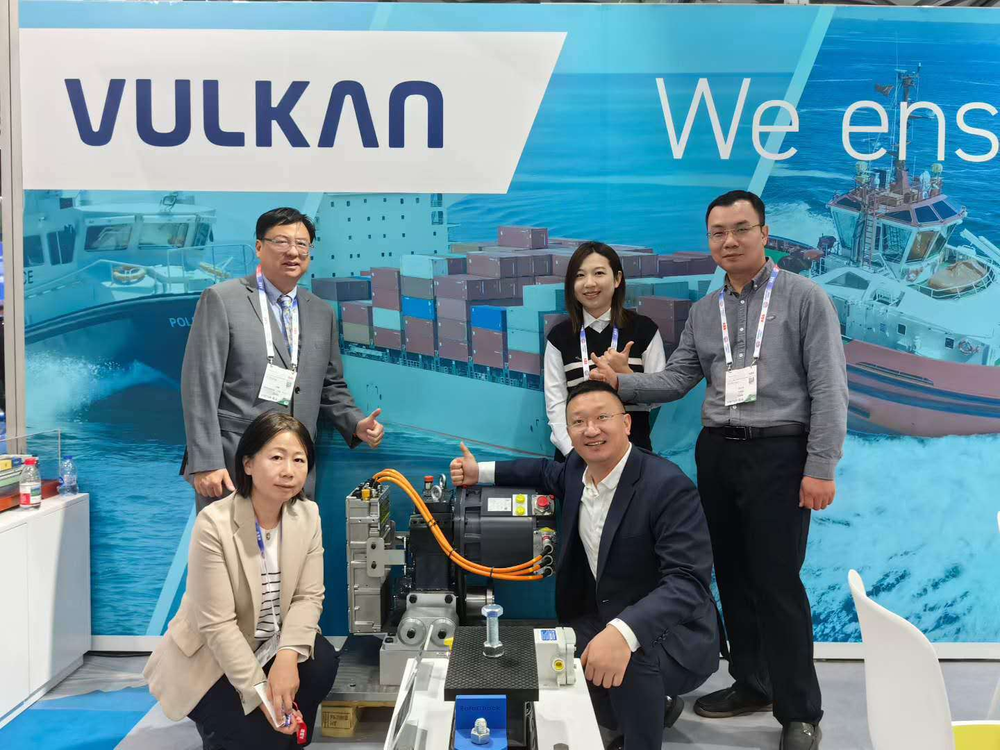
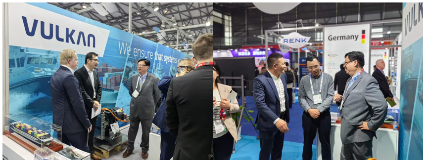

盛会重磅回归 行业聚焦全球航运电气化
2025年12月2日至5日，2025中国国际海事会展（Marintec China 2025）在上海新国际博览中心如期举办。该展会是全球规模最大、最具影响力的海事产业盛会之一，聚焦绿色航运、新能源推进、智能船舶、数字航运等前沿领域，为全球业界搭建交流与合作的高端平台。:contentReference[oaicite:1]{index=1}
本届展会吸引了来自世界各地的2200多家企业参展，展示内容覆盖船舶设计制造、绿色动力系统、智能装备及海洋新能源技术，行业关注度持续攀升。:contentReference[oaicite:2]{index=2}
GEES展台亮相 VED实体样品吸睛
作为电动船舶技术与船舶推进系统领域的领先企业，骏烨电船科技（GEES）受邀参加本次海事展，并在展会上重点展示了其最新研发的VED（Variable Electric Drive）电驱系统实体样品。该系统采用双皮带传动结构与高效电机方案，具备高效率、低噪音、稳定可靠等特点，代表了GEES在推进控制系统创新方面的最新成果。:contentReference[oaicite:3]{index=3}

在展台前来访的专业观众中，VED实体样品赢得了高度关注。GEES技术团队现场向行业客户、合作伙伴及媒体介绍了该系统的性能优势、应用场景与未来技术路线图，并就推进系统集成、电控协同、产品标准化等话题展开深入交流。
技术亮点与现场互动
- 高效能驱动结构：VED采用高效双皮带电机架构，实现更佳的转矩输出与效率提升。
- 低噪音设计：系统结构优化，有效降低运转噪声，提升船舶舒适性与环保性能。
- 模块化集成：方便在不同船型上实现灵活安装，简化维护与系统升级。
- 现场演示互动：GEES技术团队通过实物讲解和演示，使观众更直观理解产品优势。

展望未来 助力绿色航运发展
GEES表示，将继续秉持创新驱动和国际协同的战略，加速推进电动推进系统与智能控制解决方案的产业化步伐，助力全球航运业实现绿色低碳目标。凭借在V ED和其他先进驱动技术上的研发成果，GEES希望与更多行业伙伴携手推动电气化船舶的商业应用与规模部署。
本次海事展不仅为GEES提供了展示最新技术的平台，还促进了与客户、供应商及行业组织的深入对话，为未来合作奠定了良好基础。